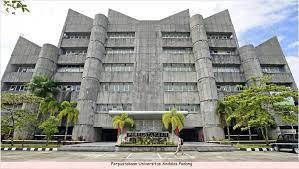
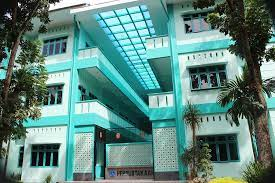
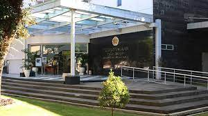

Nama: Elisabeth Zai
Nim: 210709018
Disini saya akan menyediakan beberapa jenis perpustakaan, berikut:
1. Perpustakaan Universita Andalas
Perpustakaan universitas andalas, merupakan perpustakaan perguruan tinggi terbesar di Sumatera Barat, dan telah mendapatkan akreditasi A dari LAB Perpustakaan Nasional RI pada tahun 2018 yang lalu, dan di rekomendasikan sebagai perpustakaan rujukan di Sumatera.
Berikut tautan:Perpustakaan Universitas Andalas
2. Perpustakaan Universitas Medan Area
Sejarah perpustakaan universita medan area dimulai dari berdirinya universitas medan area (UMA) pada tahun 1983. Saat ini perpustakaan Universitas Medan Area menerapkan sistem automasi perpustakaan sehingga seluruh aktifitas kerumahtanggaan perpustakaan dilakukan secara online melalui 1 sistem.
Berikut tautan:Perpustakaan Universitas Medan Area
3. Perpustakaan Universitas Gajah Mada
Perpustakaan Universitas Gajah Mada, Perpustakaan UGM berdiri pada 1 maret 1951 di jl.panembahan senopati Yogyakarta ketika kampus UGM masih berada dilingkungan kraton, perpustakaan UGM merupakan unit penunjang universita yang mempunyai tugas pokok mendukung proses pembelajaran, penelitian dan pengabdian kepada masyarakat bagi civitas academica dilingkungan Universitas Gajah Mada.
Berikut link:UPT Perpustakaan Gajah Mada
Nama: Elisabeth Zai
Nim: 210709018
Penggunaan Audio
AUDIO UNIVERSITAS GAJAH MADA
Penggunaan Video
VIDEO UNIVERSITAS GAJAH MADA